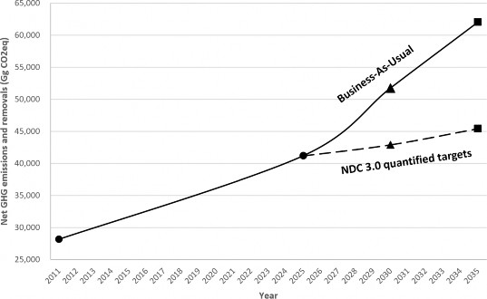

Nepal hereby presents its Nationally Determined Contribution (NDC) 3.0 under the Paris Agreement for the period up to 2035, following Articles 4.2 and 4.11 of the Paris Agreement, and Decision 1/CP.21 paragraph 23 and 24, and other relevant provisions of the Paris Agreement, including guided by the outcome of the first Global Stocktake Decision 1/CMA.5.
Nepal has negligible contribution to past and current global greenhouse gas (GHG) emissions, but high vulnerability to climate impacts. Nepal's high forest cover provides GHG removals and Nepal's snow-covered mountains provide critical environment services for the region. The NDC includes targets, polices and measures to reduce national GHG emission levels, promote adaptation actions, and address loss and damage, which will require international support on climate financing, technology transfer and capacity building for its full implementation.
NDC 3.0 is fair and ambitious contribution towards global action on climate change. Nepal has extended the scope of the coverage of its quantified mitigation targets and policy and measures reflecting specific needs and special circumstances. This NDC reflects an increase in ambition consistent with economically efficient, cost-effective and fair share-based 1.5°C pathway informed by the latest available science, and national and sub-national policies and efforts. It is a continuation and expansion of efforts listed in the previous NDCs, and is aligned with the efforts to achieve net-zero carbon dioxide emissions by 2045 as detailed in its Long-term Strategy for Net-zero Emissions (LTS) (2021).
The provision in the Paris Agreement to limit global average temperature rise to 1.5°C results in lower risks for Nepal when compared to 2°C or higher temperatures. Nepal's climate-sensitive geography, and vulnerable socio-economic conditions make the country highly susceptible to the impacts of climate change. Rising temperatures have intensified both slow-onset events (increasing temperature, glacier melting, loss of biodiversity) and extreme events (floods, drought, landslides, Glacial Lake Outburst Floods, fires and heatwaves), severely affecting lives, livelihoods, and infrastructure. Nepal aspires to avoid the residual risks of climate change through strengthened adaptation and resilience-building. However, it also recognizes that not all risks are avoidable, and in such cases, seeks to address loss and damage through international finance.
The NDC preparation process was a country-driven process following the principle of Leave No One Behind (LNOB) while integrating the principles of Just Transition, as well as Gender Equality, Disability, and Social Inclusion (GEDSI). The NDC preparation process was led by the Ministry of Forests and Environment (MoFE) in its capacity as the UN Climate Change focal point for Nepal, in close collaboration with line Ministries and Provincial Governments following an extensive and inclusive stakeholder consultation process involving the local governments, civil society organizations including youth, women, Persons with Disabilities, and Indigenous Peoples, private sector representatives, experts, academia, development partners, funders, media and members of parliament.
Implementation of this NDC will contribute towards many co-benefits such as energy security, reduced air pollution, healthy people, increase in quality of life and income, social equity, ecosystem services, biodiversity conservation, eco-tourism and climate resilience, which would also contribute significantly towards achievement of Sustainable Development Goals (SDGs) and eradication of poverty.
The quantified mitigation targets that contribute towards quantified GHG emissions reductions (II. A.), mitigation policies and measures (II. B.), and information to facilitate clarity, transparency and understanding (ICTU) table (II. C.) are given in this section. Unless mentioned otherwise, the targets are dependent on international climate finance and support.
For the base year of 2011, the yearly GHG emissions and removals were estimated to be 28,166.06 GgCO2eq in the GHG Inventory in the Third National Communication (2021). In the Business- As-Usual (BAU) Scenario, the yearly GHG emissions and removals were estimated to be 51,780.74 GgCO2eq in 2030 and 62,056.49 GgCO2eq in 2035. Compared to the Business-As- Usual (BAU) Scenario, the quantified mitigation targets (II. A.) will reduce net GHG emissions and removals by 8,866.53 GgCO2eq (17.12%) in 2030 and 16,627.80 GgCO2eq (26.79%) in 2035. Around 96% by 2030 and 97% by 2035 of total targeted emission reductions are conditional upon international climate finance and support. The total emissions reduction from this NDC including the mitigation policies and measures (II. B.) is expected to be higher than estimated above but it is not quantifiable yet.
The total estimated costs of the quantified mitigation targets are USD 73.74 billion until 2035 with an expected USD 10.824 billion (14.68%) contribution from Nepal and USD 62.916 billion (85.32%) contribution from international climate finance and support. This cost estimate includes the financial needs of public, private and other sectors.

|
Target Year |
Target |
Reference value (2024) |
Costs (USD) and Conditionality |
|
1. Energy |
|||
|
(i) Electricity generation and supply |
|||
|
2030, 2035 |
Expand renewable electricity generation capacity to 14,031 MW by 2030 and 28,500 MW by 2035. This target includes 10% by 2030 and 15% by 2035 from mini and micro-hydro power, solar, wind power and bio-energy. |
3,500 MW of electricity generation capacity, almost all of it through renewable sources. 5% from mini and micro-hydro power, solar, wind power and bio-energy. |
6,641 MW by 2030 and 10,000 MW by 2035 in total are unconditional targets. By 2035: 8.45 billion unconditional and 24.05 billion conditional. Of this, by 2030: 4.083 billion unconditional and 9.607 billion conditional. |
|
2030, 2035 |
Decrease the total system transmission and distribution losses to 11.50% and 10.50% by 2030 and 2035 while upgrading the transmission and distribution lines and substation capacity. |
12.73% |
25% of the target is an unconditional target. By 2035: 1.03 billion unconditional and 3.72 billion conditional. Of this, by 2030: 0.73 billion conditional. |
|
(ii) Cooking and Heating |
|||
|
2035 |
Expand the use of electric cookstoves to 2.1 million households and an additional 15,000 institutions and firms. |
400,000 households |
Use of electric cookstoves in total 500,000 households and an additional 1,500 institutions are unconditional targets. By 2035: 8.14 million unconditional and 126.3 million conditional |
|
2030, 2035 |
Expand the use of improved cookstoves (ICS) to 750,000 households by 2030 and 1 million by 2035 for cooking. |
127,703 households |
Use of ICS in total 227,703 households by 2030 and 277,703 households by 2035 is an unconditional target. By 2035: 7.38 million unconditional and 35.54 million conditional. Of this, by 2030: 4.92 million unconditional and 25.72 million conditional |
|
2030, 2035 |
Expand the use of metallic ICS (MICS) to 48,068 households by 2030 and 100,000 by 2035 in high-hill areas primarily for heating. |
18,068 households |
Use of MICS in a total 33,068 households by 2030 and 48,068 households by 2035 is unconditional. By 2035: 2.73 million unconditional and 4.73 million conditional, of this by 2030: 1.365 million unconditional and 1.365 million conditional |
|
2030, 2035 |
Expand the use of household-level biogas for cooking to 500,000 households by 2030 and 652,770 households by 2035 |
450,770 households |
455,770 households by 2030 and 472,770 households by 2035 is an unconditional target. By 2035: 15 million unconditional and 122.76 million conditional. Of this, by 2030: 3.41 million unconditional and 30.16 million conditional |
|
2030, 2035 |
Increase large-scale biogas plants to 550 units by 2030 and 750 units by 2035. |
357 units |
415 units by 2030 and 475 units by 2035 is an unconditional target. By 2035: 13.4 million unconditional and 31.25 million conditional. Of this, by 2030: 6.59 million unconditional and 15.34 million conditional |
|
(iii) Transport |
|||
|
2030, 2035 |
In 2030 and 2035, increase sales of battery electric vehicles (BEVs) to 90% and 95% for all private passenger vehicles (including 2-wheelers). 29% of public passenger vehicle sales were BEVs. |
12.38% of private passenger vehicle sales were BEVs (46% of four-wheelers and 9.6% of two-wheelers), and to 70% and 90% for all public passenger vehicles respectively. |
By 2035: 9.2 billion conditional. Of this, by 2030: 4.45 billion conditional. |
|
2030, 2035 |
Build and operate at least 50 km by 2030 and 100 km by 2035 of integrated electric bus, trolley and light rail transit system in Kathmandu Valley. |
0 km. |
By 2035: 12.75 billion conditional. Of this, by 2030: 1.5 billion conditional. |
|
2030, 2035 |
Build and operate 200 km by 2030 and 300 km by 2035 of the electric rail network to support public commuting and mass transportation of goods (freight). |
0 km. Note: 112 km of railway trackbed laid of around 1000 km planned length. 52 km operational using diesel-electric multiple units. |
By 2035: 5.55 billion conditional. Of this, by 2030: 3.7 billion conditional. |
|
(iv) Industry |
|||
|
2035 |
Expand the use of electricity-based furnaces for adoption by all iron and steel industries. |
20% of iron and steel industries have adopted electricity- based furnaces. Note: This initiative will involve around 20 plants |
By 2035: 100 million is conditional |
|
2035 |
Use bioenergy (up to 35% of total fuel use) in two limestone-based cement industries instead of coal. |
0%. Note: 20 limestone- based cement industries have been operating in total. |
By 2035: 10 million conditional |
|
2030, 2035 |
Convert 30% of boilers by 2030 and 70% by 2035 to electricity-based in all industries with boilers. |
0%. Note: 742 boilers have been operating in total using rice husk (60%), firewood (20%), bagasse (10%), bio-briquette (5%) and coal (5%). 30% of remaining boilers will use bagasse and bio- briquette in 2035. |
By 2035: 104 million conditional. Of this, by 2030: 31.2 million conditional |
|
2035 |
Phase out fixed chimney bull's trench kiln (FCBTK), and convert existing ones to hybrid hoffman/ tunnel kilns for brick production. |
1,100 brick kilns (95% FCBTK and 5% hoffman/ tunnel/ clamp kilns) |
By 2035: 171 million conditional |
|
2030 |
Pilot medium-sized electricity-based tunnel kiln for producing 100 million bricks per year. |
Zero. |
By 2030: 1.52 million conditional |
|
2. Agriculture, Forestry and Other Land Use (AFOLU) |
|||
|
(i) Agriculture |
|||
|
2035 |
Install 500,000 improved cattle sheds for efficient manure management. |
20,376 improved cattle sheds |
By 2035: 720 million conditional |
|
(ii) Land Use, Land-use Change, and Forestry (LULUCF) |
|||
|
2035 |
Maintain at least 46% of the total area of the country under forest cover (including other wooded land limited to less than 2.7%) and advance sustainable forest management. |
46% (including 2.7% other wooded land) |
By 2035: 1.1 billion unconditional and 4 billion conditional |
|
3. Waste |
|||
|
2035 |
Treat 510 million liters of wastewater per day before being discharged. |
61 million liters per day |
140 million liters per day is unconditional and 370 million liters per day is conditional. By 2035: 0.18 billion unconditional and 1.35 billion conditional |
|
2035 |
Treat 370,000 cubic meters of faecal sludge per year. |
42,000 cubic meters |
110,000 cubic meters is unconditional and 260,000 cubic meters is conditional. By 2035: 17.77 million unconditional and 56.16 million conditional |
|
2030, 2035 |
Manage healthcare waste using non-burn technologies in 1400 Healthcare Facilities (HCFs) by 2030 and 2800 HCFs by 2035. |
158 HCFs using non- burn technologies |
By 2035: 58.2 million conditional. Of this, by 2030: 27.4 million conditional |
|
2035 |
Install combined effluent treatment plants in 6 Industrial Estates. |
1 combined effluent treatment plant in Hetauda Industrial District. |
By 2035: 72 million conditional |
|
4. Industrial Processes and Product Use (IPPU) |
|||
|
2035 |
Decrease clinker factor to 75% for cement production. |
95% clinker factor. Note: There are 37 clinker-based and 20 limestone-based cement industries in operation. |
By 2035: 683 million conditional |
(i) Energy generation and supply
By 2030, national policies and acts on energy, renewable energy and energy efficiency will be formulated and the overall capacity will be strengthened to ensure adequate energy security and energy mix. By 2035, 400 local governments will formulate and start implementing the Municipal Energy Plans.
Smart metering infrastructure will be promoted to enable real-time monitoring, reduce losses and promote demand-side management. 20% generation reserve margin will be maintained, the Transmission System Development Plan of Nepal will be implemented, and a river corridor master plan will be prepared. Ring main distribution center for Kathmandu Valley will be established by 2035, capable of meeting growing demands up to 2050.
Opportunities for green hydrogen consumption, production, transportation and storage, including through carbon financing, will be determined.
Land lease processes for all renewable energy projects including hydropower storage, solar and windpower will be streamlined. For small-scale energy generation projects below 10 MW, adequate policies including incentives and streamlined access to Power Purchase Agreements (PPAs) will be ensured. Distributed Renewable Energy (DRE) technologies, and clean cooking and heating will be promoted, including through carbon financing, and testing facilities will be strengthened.
By 2030, develop Waste-to-energy guidelines. By 2035, install waste-to-energy plants in 2 Special Economic Zones (SEZs). Expand the Municipal level waste-to-energy plants in Metropolitan and Sub-metropolitan cities to 18 from the current 7.
By 2035, Install and commission Institutional Solar Photovoltaic System (ISPS) to achieve a total 10 MW of Solar PV systems in schools. By 2035, promote ISPS in 2,800 health care facilities (HCFs).
Promote use of renewable electricity in sectors such as commercial, health, crematoriums, construction and industry.
(ii) Cooking and Heating
100 local governments will approve and implement energy-efficient building by laws and Standard Operating Procedure (SoP).
Energy-efficient building codes to promote low carbon and thermally efficient buildings will be approved and implemented.
By 2035, expand the use of solar thermal installations to 1,354 MW-thermal (MWth) in households for hot water and space heating from the current 389 MWth; and expand the use of solar thermal installations to 29 MWth in industries for hot water and space heating from the current 1.2 MWth.
(iii) Transport
Increase sales of battery electric vehicles (BEVs) to an additional 10% and 20% for all freight and waste collection vehicles by 2030 and 2035.
Sufficient charging stations and infrastructure will be developed to meet the quantified BEV targets by 2030 and 2035. Electric vehicle standard, technical human resources, and dedicated service centers will be established by 2030. The Government, education and health sectors will prioritize the use of battery electric vehicles. In addition to BEVs, feasibility of other types of zero-emission vehicles such as hydrogen fuel cell and renewable powered vehicles will be assessed and promoted accordingly.
Vehicle fitness test centers and a national research center for motor vehicles will be established by 2030, with infrastructure enhancement by 2035. Vehicle fitness standards and testing protocols will be implemented by 2035. Sustainable practices for battery recycling and skilled human resources will be developed including piloting by 2030.
An effective public transport system in Kathmandu Valley and other metropolitan cities will be established by 2030 and in all other urban areas by 2035.
A non-motorized transport and mobility policy will be formulated and implemented by 2030. By 2030, cycle lanes will be operational in all metropolitan and sub-metropolitan cities, and roads made friendly for cycling and walking by 2035. Bicycle-sharing will be implemented in at least 3 cities by 2030.
Policy frameworks for cable-based transportation will be established by 2030. By 2030, at least 50 cable-based modes of transportation will be in operation, increasing to 150 by 2035.
By 2030, measures will be included in policies to offset the carbon footprint of emissions resulting from tourism transport.
(iv) Industry
By 2035, install waste-to-heat electricity recovery systems in 16 limestone-based cement industries to generate 75 MVA of electricity from the current 24.7 MVA in 4 industries.
By 2035, all small and medium enterprises (SMEs) in Kathmandu Valley using small furnaces and boilers will be electricity-based.
By 2030, a performance certification system for fossil fuel-based industrial equipment will be installed and emission standards for brick, cement, and steel/iron industries will be established and energy-related emissions of other industries will be monitored and reported. By 2035, 500 technical personnel in the cement, brick, steel, and tiles industries will be trained on renewable energy technologies.
Determine the feasibility of low-carbon brick production technologies by 2030 and promote accordingly.
Determine the feasibility of using refuse driven fuel (RDF) by 2030 and promote accordingly.
Certified and verified energy efficiency upgrades in industries will be incentivized. Energy audits will be promoted in energy intensive industries and a national benchmarking framework will be developed.
(v) Energy Efficiency in Buildings
By 2030, energy performance guidelines and energy audits will be conducted in 1,500 government buildings.
By 2030, 30% of new school and education infrastructure construction will adhere to the comprehensive school safety guidelines and use carbon-offset and energy-efficient systems, increasing to 70% by 2035.
Incentive structures for renovations and new constructions of energy-efficient and inclusive buildings will be developed by 2030. Building certification standard guidelines will be developed by 2030.
Standardized labeling for household electrical appliances will be developed and implemented by 2030.
(i) Agriculture
A total of 5000 ha and 10,000 ha of new Orchards will be established by 2030 and 2035 respectively.
By 2030, carbon sink potential from increasing Soil Organic Matter for various types of agricultural lands, crops and timeframes will be assessed, and efforts to increase Soil Organic Matter to at least 4% by 2035 will be pursued.
Post-harvest losses will be reduced to 15% by 2035, and green enterprise-friendly programs targeting small-holder farmers and marginalized communities will be conducted.
Promote climate friendly crop and livestock production system. A baseline study on crop residue burning in southern Nepal will be conducted by 2030 and crop residue burning will be reduced by 2035.
(ii) Land Use, Land-use Change, and Forestry (LULUCF)
By 2035, strengthen forest governance by aligning the regulation and operation procedure of community-based forest management groups with sustainable forest management (SFM).
Ensure synergy of forestry sector targets, policies and measures with Convention on Biological Diversity (CBD).
By 2030, Nepal will be self-sustainable in wood production through sustainable harvesting practices, and forest-based industries, businesses, skill development and jobs will be promoted.
By 2035, update the data on national forest area and expand the coverage under carbon market through the REDD Implementation Centre (IC) while strengthening the capacity of REDD- IC and Forest Research and Training Centre (FRTC). Promote participation of family-owned and private forests in carbon markets.
By 2030, conduct assessments and strengthen data collection on sustainable forest management to determine the baseline SFM information by various types of forests and regions. Increase coverage of sustainable forest management to 50% of Tarai and Inner Tarai forests and 25% of middle hills and mountain forests, including through the use of funding from REDD+ initiatives and carbon financing.
By 2030, the carbon sink capacity of the land-use sector will be enhanced by operationalizing the Forest Development Fund (FDF) for compensation of plantations and forest restoration, increasing the national average Growing Stock to 168 m3/ha. By 2035, sustainable forest management will be expanded to degraded forest lands, including the Chure region.
Promote agroforestry and reforestation, and strengthen the system for forest monitoring and transparency.
By 2035, private sector engagement and adoption of innovative mechanized technology in sustainable forest management will be ensured through proper policy provision.
By 2035, at least 60% of Nepal's forests will be under community-based management, ensuring 50% women representation and proportional representation of Dalits and Indigenous People in key posts. Fair and equitable benefits from sustainable forest management, watershed management, and biodiversity conservation will be ensured for Local Communities, women, and Indigenous People.
By 2030, data will be collected and analyzed on trees outside forest, including in urban areas, and urban greenery will be promoted. Reduce forest fire incidents through sustainable management of dead wood and forest residue. Strengthen the capacity of Division Forest Offices and develop a common stakeholder coordination mechanism for regulating and controlling forest fires.
Ensure land use changes are sustainable, and land ownership and rights are strengthened.
Material Recovery Facilities will be established adopting waste segregation and recycling, upcycling and downcycling in at least 100 municipalities by 2030 and all municipalities by 2035. Circular economy approaches will be strengthened.
By 2030, organic waste management including composting and biogas production will be scaled up.
By 2035, methane capture will be installed in all 10 industries with anaerobic wastewater treatment system.
By 2030, the implementation of solid waste management act and regulation will be strengthened and a monitoring mechanism for waste management practices will be developed, wastewater and fecal sludge upcycling businesses will be supported and the effluent standards updated to promote reuse options.
By 2030, sustainable management of mountaineering and trekking based waste will be ensured. Occupational health safety standards and guidelines for the waste sector will be developed. Effluent standards will be updated and treatment and reuse of wastewater will be promoted.
By 2035, Continuous Emission Monitoring System (CEMS) will be installed in all cement industries.
By 2030, baseline emission information for SMEs and large industries will be developed, with periodic reporting for specific emission reductions.
(i) Water, sanitation and hygiene (WASH)
A GHG inventory system will be developed for water supply and sanitation services. Climate- resilient WASH guidelines, technical standards, and norms will be updated to reduce GHG emissions in service delivery and maintenance.
Green School Guidelines will be updated by 2030. By 2035, 100% of schools will formulate and implement action plans for green schools with quality WASH facilities.
By 2030, 50% of the population, including women, children, and socially marginalized people, will benefit from safely managed and low-carbon water supply services.
(ii) Education
Green Jobs and Green Skills will be integrated into technical, vocational, and university level education as well as school education by 2030.
By 2035, climate change knowledge, including traditional, indigenous and local adaptation and mitigation knowledge, and cultural heritage aspects, will be fully integrated into the local- level curriculum.
(iii) Water resources
Groundwater cluster projects for irrigation will cover an additional 112,500 ha and 318,000 ha by 2030 and 2035 respectively using renewable energy. Lift irrigation projects will be developed to irrigate additional 111,500 ha using renewable energy by 2030.
(iv) Health
Upgrade 140 HCFs by 2030 and 280 HCFs by 2035 to be low-carbon and climate resilient, including use of solar PV back-ups.
By 2030, action plan on low-carbon health system will be developed and implemented.
By 2035, 75% traditional anesthetic gases will be replaced with low GHG alternatives.
(v) Urban and rural settlements
By 2030, Green Building Codes and Guidelines will be developed, and awareness and capacity building will be provided to support 250 municipalities.
By 2035, the central electronic building permit system (EBPS) incorporating newly developed Building Construction Working Procedure (BCWP) will be developed and implemented in 125 municipalities.
By 2030, low carbon, climate-resilient, and inclusive practices (cycling, plantation, maintenance of green belts and parks, use of electric vehicles) will be identified and promoted.
(vi) Tourism
By 2030, integrated (nature and culture-based) sustainable tourism plans will be formulated and implemented in at least seven main tourist destinations (one in each province), and at least five tourist destinations will be carbon neutral.
|
1. Quantifiable information on the reference point (including, as appropriate, a base year): |
|
|
(a) Reference year(s), base year(s), reference period(s) or other starting point(s). |
NDC targets are for years 2030 and 2035, and reductions in the net GHG emissions and removals are calculated by comparing them to the projected emissions for the same years. For base year, estimated historical GHG emissions and removals of year 2011 draft are considered based on the GHG Inventory in the Third National Communication (TNC) (2021) is considered. |
|
(b) Quantifiable information on the reference indicators, their values in the reference year(s), base year(s), reference period(s) or other starting point(s), and, as applicable, in the target year. |
The reference indicators are the estimated GHG emissions and removals shown below. GHG emissions and removals for 2030 and 2035 was estimated for the Business-As-Usual (BAU) Scenario. For the base year of 2011 in the Second NDC (2020), the net GHG emissions and removals was estimated to be 31,998.91 GgCO2eq based on the preliminary GHG Inventory in the draft Third National Communication (2021). However, in the TNC (2021), the GHG emissions and removals for 2011 was revised to be 28,166.06 GgCO2eq based on improvements in estimation of GHG emissions and removals. GHG emissions and removals in GgCO2eq Base year: 2011 (TNC) Energy: 14,751.66 AFOLU: 12,121.33 -Agriculture 29,163.75 -LULUCF (17,042.42) IPPU: 368.40 Waste: 924.67 Total excluding LULUCF: 45,208.48 Total including LULUCF: 28,166.06 Business-As-Usual Scenario: Year: 2030 2035 Energy: 32,965.89 37,908.74 AFOLU: 4,963.53 6,192.15 -Agriculture 24,985.43 26,214.05 -LULUCF (20,021.90) (20,021.90) IPPU: 7,664.10 10,742.07 Waste: 6,187.22 7,213.52 Total excluding LULUCF: 71,802.64 82,078.39 Total including LULUCF: 51,780.74 62,056.49 |
|
(c) For strategies, plans and actions referred to in Article 4, paragraph 6, of the Paris Agreement, or policies and measures as components of nationally determined contributions where paragraph 1(b) above is not applicable, Parties to provide other relevant information. |
The policies and measures are presented in Section II B above. |
|
(d) Target relative to the reference indicator, expressed numerically, for example in percentage or amount of reduction. |
The quantified sectoral targets are presented in Section II A above. The projected GHG emissions and removals in years 2030 and 2035 after accounting for i) unconditional and ii) all (unconditional and conditional) quantified targets are given below. GHG emissions and removals in GgCO2eq After accounting for Unconditional targets: Year: 2030 2035 Energy: 32,738.57 37,503.53 AFOLU: 4,852.88 6,105.96 -Agriculture 24,985.43 26,214.05 -LULUCF (20,132.55) (20,108.09) IPPU: 7,664.10 10,742.07 Waste: 6,171.73 7,186.46 Total excluding LULUCF: 71,559.83 81,646.12 Total including LULUCF: 51,427.28 61,538.03 After accounting for Unconditional & Conditional targets: Year: 2030 2035 Energy: 28,251.63 29,362.33 AFOLU: 3,397.04 3,719.21 -Agriculture 24,659.46 25,635.13 -LULUCF (21,262.42) (21,915.92) IPPU: 6,673.98 8,485.44 Waste: 4,591.56 3,861.70 Total excluding LULUCF: 64,176.63 67,344.61 Total including LULUCF: 42,914.21 45,428.69 Compared to the Business-As-Usual (BAU) Scenario, the quantified mitigation targets will reduce net GHG emissions and removals by 8,866.53 GgCO2eq (17.12%) in 2030 and 16,627.80 GgCO2eq (26.79%) in 2035. If the quantified targets are implemented, the total GHG emissions reduction from the Energy sector will be 4,714.26 GgCO2eq by 2030 and 8,546.41 GgCO2eq by 2035, with reduction in cooking and heating sub-sector of 2,022.17 GgCO2eq by 2030 and 3,004.45 GgCO2eq by 2035, and reduction in transport sub-sector of 1,426.22 GgCO2eq by 2030 and 2,731.57 GgCO2eq by 2035. The total GHG emissions reduction from the Agriculture, Forestry and Other Land Use (AFOLU) sector will be 1,566.49 GgCO2eq by 2030 and 2,472.94 GgCO2eq 2035. The total GHG emissions reduction from the Waste sector will be 1,595.66 GgCO2eq by 2030 and 3,351.82 GgCO2eq 2035. The total GHG emissions reduction from the Industrial Processes and Product Use (IPPU) sector will be 990.12 GgCO2eq by 2030 and 2,256.63 GgCO2eq 2035. Around 96% by 2030 and 97% by 2035 of total targeted emission reductions are conditional upon international climate finance and support. |
|
(e) Information on sources of data used in quantifying the reference point(s). |
GHG emissions and removals for 2011 is estimated in the GHG Inventory in the TNC (2021). |
|
(f) Information on the circumstances under which the Party may update the values of the reference indicators. |
Nepal may update the reference indicators in case of availability of more recent and improved data on GHG emissions and removals. |
|
2. Time frames and/or periods for implementation: |
|
|
(a) Time frame and/or period for implementation, including start and end date, consistent with any further relevant decision adopted by the Conference of the Parties serving as the meeting of the Parties to the Paris Agreement (CMA). |
The targets cover the period from 2025 to 2035, and reflect a continuation and expansion of efforts listed in previous NDCs. |
|
(b) Whether it is a single-year or multi-year target, as applicable. |
Single year target in 2035, including updates on 2030 targets. |
|
3. Scope and coverage: |
|
|
(a) General description of the target. |
Sectoral activity-based quantified targets with quantified GHG emission reductions in 1 (d). Nepal will meet unconditional targets from its resources; whereas, conditional targets are dependent on international climate finance and support, technology transfer and/or capacity building. |
|
(b) Sectors, gases, categories and pools covered by the nationally determined contribution, including, as applicable, consistent with Intergovernmental Panel on Climate Change (IPCC) guidelines. |
Sectors scope: Energy (including transport); Agriculture, Forestry and Other Land-Use (AFOLU); Industrial Processes and Product Use (IPPU); and Waste. Gases scope: CO2, CH4, N2O. Pools covered: Above ground biomass, below ground biomass, soil organic carbon, wetlands and stock of harvested wood products. |
|
(c) How the Party has taken into consideration paragraph 31(c) and (d) of decision 1/CP.21. |
The detailed assessment carried out during the NDC preparation process concluded that the data needed to define targets and to rigorously assess the impact of policies and actions on emissions for all sectors was not available. Nonetheless, Nepal has extended the scope of the coverage of its quantified mitigation targets. For policy and measures, Nepal will strive to increase the quality of GHG emissions and removals data to improve these targets as quantified mitigation targets in subsequent NDC cycles. Nepal strives to include all major categories of anthropogenic GHG emissions and removals as more robust data becomes available, and move gradually towards economy-wide absolute emission reduction targets covering all sectors over subsequent NDC cycles. |
|
(d) Mitigation co-benefits resulting from Parties' adaptation actions and/or economic diversification plans, including description of specific projects, measures and initiatives of Parties' adaptation actions and/or economic diversification plans. |
Not applicable. Adaptation priorities are included in Section III. |
|
4. Planning processes: |
|
|
(a) Information on the planning processes that the Party undertook to prepare its nationally determined contribution and, if available, on the Party's implementation plans, including, as appropriate: |
|
|
(i) Domestic institutional arrangements, public participation and engagement with local communities and indigenous peoples, in a gender-responsive manner. |
The NDC preparation process was a country-driven process following the principle of Leave No One Behind with a focus on engagement with local communities and indigenous peoples, in a gender-responsive manner. It was led by the Ministry of Forests and Environment (MoFE) - the UNFCCC focal institution for Nepal - in close collaboration with line Ministries and Provincial Governments following an extensive and inclusive stakeholder consultation process involving the local governments, civil society organizations including youth, women, Persons with Disabilities, and Indigenous Peoples, private sector representatives, experts, academia, development partners, funders, media and members of parliament. The proposed targets served as inputs to technical analysis conducted utilizing Low Emissions Analysis Platform (LEAP) to calculate GHG emission reductions for various scenarios. The proposed targets were further reviewed and verified by the NDC Technical Committee established by MoFE. Further, the NDC was discussed at the Inter-Ministerial Coordination Committee on Climate Change (IMCCCC), and shared with line Ministries for official inputs, shared on MoFE's website for public inputs, finalized by incorporating all relevant inputs, and submitted to the Cabinet (Office of the Prime Minister & Council of Ministers) for approval. |
|
(ii) Contextual matters, including, inter alia, as appropriate: |
|
|
a. National circumstances, such as geography, climate, economy, sustainable development and poverty eradication. |
Nepal is a landlocked country in South Asia that lies in the southern face of the Himalayan mountain range with a population of 29.16 million (2021). The country is located between 26° 22' and 30° 27' North latitude and 80° 04' and 88° 12' East longitude and covers an area of 147,516 square kilometres. It borders India to the south, east and west, and China to the north; whereas, Bangladesh and Bhutan are located in close proximity. Physiographic regions within the country include High Himal, High Mountain, Middle Mountain, Siwalik, and the Tarai. Within these regions, elevations range from 59 meters to 8,848 meters. Nepal's climate is influenced by the Himalayan mountain range and the South Asian Monsoon. The climate has four distinct seasons: pre-monsoon (March-May), monsoon (June-September), post-monsoon (October- November) and winter (December-February). Nepal is expected to graduate from the Least Developed Country (LDC) status to developing country status in 2026. Nepal's economy has grown significantly over the years to around USD 41 billion, with contributions from key sectors such as agriculture (24.1%), industry (13.0%), and services (62.9%). The GDP per capita was USD 1,377 in 2023, and GDP growth rates were 1.95% in 2023, 5.63% in 2022, 4.84% in 2021, and a contraction of -2.37% in 2020 due to COVID- 19 pandemic. The national debt has surged to USD 18.75 billion, reaching around 45.8% of its total GDP. Life expectancy at birth has reached 70 years as of 2022, and primary school enrollment rates have improved, reflecting better access to education. The Multidimensional Poverty Index (MPI) value for Nepal was 0.074 in 2019, which was a substantial reduction from 0.301 in 2014. Nepal has made significant strides in maternal and child health, with the maternal mortality ratio decreasing to 174 per 100,000 live births as of 2020, and the under-five mortality rate dropping to 27 per 1,000 live births as of 2021. Nepal has also made notable progress in achieving the Sustainable Development Goals (SDGs), with improvements in energy access, poverty reduction, education, and health among others. Nonetheless, climate change poses significant risks to the economy and has resulted in substantial loss and damage. |
|
b. Best practices and experience related to the preparation of the nationally determined contribution. |
Nepal's NDC follows rules of transparency and understanding described in Decision 4/CMA.1. Nepal's Long-term strategy for net-zero emissions (LTS) has set a goal to reach net-zero by 2045 for carbon dioxide gas based on additional measures dependent on international support. The NDC is informed by the LTS; however, only GHG reductions from NDC's quantified mitigation targets were quantifiable. The GHG reductions from NDC's policies and measures are not yet quantifiable yet to allow a direct comparison. To determine the target level, MoFE has led work across Federal Line Ministries and Provincial Governments to identify Nepal's highest possible ambition, taking into account outcomes of the Global Stocktake and alignment with fair share-based 1.5°C pathway, requirements and principles of the Paris Agreement, latest available science and analysis of decarbonization potential using GHG scenario modelling. The NDC preparation process was a country-driven process following the principle of Leave No One Behind with a focus on engagement with local communities and indigenous peoples, in a gender-responsive manner. It included extensive and inclusive stakeholder consultation process involving the local governments, civil society organizations including youth, women, Persons with Disabilities, and Indigenous Peoples, private sector representatives, experts, academia, development partners, funders, media and members of parliament. |
|
c. Other contextual aspirations and priorities acknowledged when joining the Paris Agreement. |
The provision in the Paris Agreement to limit global average temperature rise to 1.5°C results in lower risks for Nepal when compared to 2°C or higher temperatures. The snow and glaciers in the high mountains are already experiencing severe impacts at the current level of warming, leading to extreme rainfall and longer droughts in the hills and plains. Therefore, achieving the Paris Agreement goal of limiting global temperature rise to 1.5°C is crucial for Nepal. Nepal's efforts to reduce national GHG emission levels will require international support on climate financing, technology transfer and capacity building. Furthermore, Nepal aspires to avoid the residual risks caused by Loss and Damage and to receive financial and any other support for the risks that may still materialize. |
|
(b) Specific information applicable to Parties, including regional economic integration organizations and their member States, that have reached an agreement to act jointly under Article 4, paragraph 2, of the Paris Agreement, including the Parties that agreed to act jointly and the terms of the agreement, in accordance with Article 4, paragraphs 16 18, of the Paris Agreement. |
Not applicable. |
|
(c) How the Party's preparation of its nationally determined contribution has been informed by the outcomes of the global stocktake, in accordance with Article 4, paragraph 9, of the Paris Agreement. |
Nepal's NDC is informed by Decision 1/CMA.5 Outcome of the first global stocktake, such as consideration of 1.5°C decarbonization pathway, tripling renewable energy capacity and doubling the average annual rate of energy efficiency improvements by 2030, phase-down of coal power, net zero emission energy systems, zero- and low-emission fuels and technologies, just transition away from fossil fuels in energy systems, low-carbon hydrogen production, reduction of non-carbon-dioxide emissions especially methane emissions by 2030, reduction of emissions from road transport on a range of pathways, including zero-emission vehicles, global goal on adaptation of enhancing adaptive capacity, strengthening resilience and reducing vulnerability to climate change. It also considers national inventories of climate impacts, building accessible, user- driven climate services systems, including early warning systems, land-use management, sustainable agriculture, resilient food systems, nature-based solutions and ecosystem-based approaches, protecting, conserving and restoring nature and ecosystems including forests, mountains and other terrestrial ecosystems, ecosystem-based approaches including adaptation and resilience measures in mountain regions, making finance flows consistent with a pathway towards low greenhouse gas emissions and climate-resilient development, role of the private sector and the need to strengthen policy guidance, incentives, regulations and enabling conditions to reach the scale of investments, coherence and complementarity in all aspects of action and support for averting, minimizing and addressing loss and damage associated with climate change impacts, coherence and synergies between efforts pertaining to disaster risk reduction, humanitarian assistance, rehabilitation, recovery and reconstruction, and displacement, planned relocation and migration, actions to address slow onset events, in order to make progress in averting, minimizing and addressing loss and damage, methodologies and tools, including modelling tools, for assessing and analyzing the impacts of the implementation of response measures, with a view to minimizing the negative and maximizing the positive impacts of response measures, with a particular focus on the creation of decent work and quality jobs. |
|
(d) Each Party with a nationally determined contribution under Article 4 of the Paris Agreement that consists of adaptation action and/or economic diversification plans resulting in mitigation co-benefits consistent with Article 4, paragraph 7, of the Paris Agreement to submit information on: |
|
|
(i) How the economic and social consequences of response measures have been considered in developing the nationally determined contribution. |
Not applicable. |
|
(ii) Specific projects, measures and activities to be implemented to contribute to mitigation co-benefits, including information on adaptation plans that also yield mitigation co-benefits, which may cover, but are not limited to, key sectors, such as energy, resources, water resources, coastal resources, human settlements and urban planning, agriculture and forestry; and economic diversification actions, which may cover, but are not limited to, sectors such as manufacturing and industry, energy and mining, transport and communication, construction, tourism, real estate, agriculture and fisheries. |
Adaptation priorities are included in Section III, which may have mitigation co-benefits. |
|
5. Assumptions and methodological approaches, including those for estimating and accounting for anthropogenic greenhouse gas emissions and, as appropriate, removals: |
|
|
(a) Assumptions and methodological approaches used for accounting for anthropogenic greenhouse gas emissions and removals corresponding to the Party's nationally determined contribution, consistent with decision 1/CP.21, paragraph 31, and accounting guidance adopted by the CMA. |
For quantified mitigation targets, Nepal has estimated anthropogenic GHG emissions and removals using the 2006 Intergovernmental Panel on Climate Change (IPCC) Guidelines for National Greenhouse Gas Inventories, and 2019 Refinement to this guideline. Nepal will strive to improve quality and maintain coherence of GHG emissions and removals data across National Communications, GHG Inventories, NDCs, LTS/Long-Term Low Emission Development Strategies (LT-LEDS) and Biennial Update Report (BUR)/Biennial Transparency Report (BTR). Three additional guidelines have been considered for quality assurance:
|
|
(b) Assumptions and methodological approaches used for accounting for the implementation of policies and measures or strategies in the nationally determined contribution. |
Decrease in GHG emissions and removals from the implementation of policies and measures have not been estimated as they are not quantifiable yet. For policies and measures, Nepal will strive to increase the quality of GHG emissions and removals data to improve these targets as quantified mitigation targets in subsequent NDC cycles such that the decrease in GHG emissions and removals can be estimated. Nepal will strive to gradually move towards comprehensive economy-wide targets over NDC cycles. |
|
(c) If applicable, information on how the Party will take into account existing methods and guidance under the Convention to account for anthropogenic emissions and removals, in accordance with Article 4, paragraph 14, of the Paris Agreement, as appropriate. |
The IPCC 2006 Guidelines have been used to calculate emissions in the GHG Inventory in Nepal's Third National Communication (2021). |
|
(d) IPCC methodologies and metrics used for estimating anthropogenic greenhouse gas emissions and removals. |
IPCC methodologies:
IPCC metrics:
|
|
(e) Sector-, category- or activity-specific assumptions, methodologies and approaches consistent with IPCC guidance, as appropriate, including, as applicable: |
Due to limited data availability, all GHG emission sectors are not covered in this NDC. Gradually, Nepal will strive to update its GHG emission inventories, develop emission factors for all sectors following the 2006 and other IPCC guidelines, carry out modelling to cover all sectors for sector-specific scenarios and projections, establish a mechanism to collect, store and maintain datasets and account for conditional targets that require financial, capacity building and technical support. Nepal will strive to improve quality and maintain coherence of GHG emissions and removals data across National Communications, GHG Inventories, NDCs, LTS/LT-LEDS and BUR/BTR. Nepal will strive to gradually move towards comprehensive economy-wide targets. |
|
(i) Approach to addressing emissions and subsequent removals from natural disturbances on managed lands. |
See 5 (e) above. |
|
(ii) Approach used to account for emissions and removals from harvested wood products. |
See 5 (e) above. |
|
(iii) Approach used to address the effects of age-class structure in forests. |
See 5 (e) above. |
|
(f) Other assumptions and methodological approaches used for understanding the nationally determined contribution and, if applicable, estimating corresponding emissions and removals, including: |
Scenarios of GHG emissions and reductions were modelled in Low Emissions Analysis Platform (LEAP) platform to calculate GHG emission reductions of quantified mitigation targets of this NDC. |
|
(i) How the reference indicators, baseline(s) and/or reference level(s), including, where applicable, sector-, category- or activity-specific reference levels, are constructed, including, for example, key parameters, assumptions, definitions, methodologies, data sources and models used. |
Calculations of GHG emission and removals were performed using LEAP in reference to projected GHG emissions in the year 2030 and 2035 of the Business-As-Usual scenario. Historical data on base year of 2011 (TNC, 2021) and estimations up to 2022 (draft BTR, 2024) were modeled in LEAP for calibration. |
|
(ii) For Parties with nationally determined contributions that contain non- greenhouse-gas components, information on assumptions and methodological approaches used in relation to those components, as applicable. |
Not applicable. |
|
(iii) For climate forcers included in nationally determined contributions not covered by IPCC guidelines, information on how the climate forcers are estimated. |
Not applicable. |
|
(iv) Further technical information, as necessary. |
None. |
|
(g) The intention to use voluntary cooperation under Article 6 of the Paris Agreement, if applicable. |
Nepal will prioritize some climate actions for the carbon market under Article 6 of the Paris Agreement while ensuring there is no double counting, and maintaining environment integrity. To engage effectively in the carbon trading under Articles 6.2 and Article 6.4, including for the implementation of Article 6.8 of the Paris Agreement, Nepal will establish robust institutional frameworks and develop necessary regulations to facilitate carbon trading. Some of these preparations are already reflected in the Environment Protection Act (2019) and Regulation (2020). Capacity-building programs will be conducted to enhance the technical expertise of relevant stakeholders, including government officials, private sector entities, and local communities. Nepal will ensure corresponding adjustments and the establishment of a transparent monitoring, reporting, and verification systems and registries to track carbon emissions accurately and facilitate the issuance of carbon credits. |
|
6. How the Party considers that its nationally determined contribution is fair and ambitious in the light of its national circumstances: |
|
|
(a) How the Party considers that its nationally determined contribution is fair and ambitious in the light of its national circumstances. |
Nepal's development has always been less carbon intensive with priority of environmental sustainability, contributing insignificantly to both past and current global GHG emissions. Additionally, Nepal's high forest cover provides GHG emission removals and Nepal's mountains provide critical environment services for the region. Nevertheless, Nepal recognizes that to meet the 1.5°C temperature goal, all countries need to undertake ambitious mitigation actions. This NDC and accompanying information reflect Nepal's commitment under the Paris Agreement to address climate change. Nepal will strive to gradually move towards comprehensive economy-wide targets. Nepal's NDC is a fair and ambitious contribution to global action on climate change, which is consistent with economically efficient, cost- effective and fair share-based 1.5°C pathway estimates. |
|
(b) Fairness considerations, including reflecting on equity. |
Nepal's NDC targets were determined taking account of the temperature goal of the Paris Agreement, the Global Stocktake and the principles of equity and common but differentiated responsibilities and respective capabilities, in the light of different national circumstances. In light of Nepal's insignificant contribution to past and current global GHG emissions, the targeted mitigation emission reductions contribute a fair share to global efforts. |
|
(c) How the Party has addressed Article 4, paragraph 3, of the Paris Agreement. |
Nepal's current NDC is a progression compared to the previous NDC, where quantity of targets, quality of information and the ambition in quantified mitigation targets results in highest possible ambition and greater levels of GHG emission reductions. |
|
(d) How the Party has addressed Article 4, paragraph 4, of the Paris Agreement. |
Nepal has increased the quantity of and the ambition in quantified mitigation targets. For policy and measures, Nepal will strive to increase the quality of GHG emissions and removals data to improve these targets as quantified mitigation targets in subsequent NDC cycles. Nepal strives to gradually move towards comprehensive economy-wide emission reduction or limitation targets. |
|
(e) How the Party has addressed Article 4, paragraph 6, of the Paris Agreement. |
Nepal is a Least Developed Country and has set activity based quantified targets and policies and measures, in Section II above reflecting specific needs and special circumstances. |
|
7. How the nationally determined contribution contributes towards achieving the objective of the Convention as set out in its Article 2: |
|
|
(a) How the nationally determined contribution contributes towards achieving the objective of the Convention as set out in its Article 2. |
See 6 (a) above. Nepal has strived to make domestic finance flows consistent with a pathway towards low greenhouse gas emissions and climate-resilient development. Nepal's efforts to reduce national GHG emission levels will require international support on climate financing, technology transfer and/or capacity building. |
|
(b) How the nationally determined contribution contributes towards Article 2, paragraph 1(a), and Article 4, paragraph 1, of the Paris Agreement. |
The provision in the Paris Agreement to limit global average temperature rise to 1.5°C results in lower risks for Nepal when compared to 2°C or higher temperatures. Nepal aspires to achieve net-zero carbon dioxide emissions by 2045 as mentioned in its LTS (2021) and the NDC is informed by the strategies in the LTS. Nepal's NDC target is developed in accordance with best available science. Implementation of this NDC will contribute towards achievement of SDGs and eradication of poverty while ensuring a just transition. |
Adaptation is crucial in managing climate change impacts, reducing vulnerabilities, and increasing adaptive capacities and resilience while ensuring security. Incorporating adaptive methods like sustainable forest, land and water management, resilient infrastructure, and disaster preparedness can reduce climate risks and ensure long-term benefits. Promoting co-benefits from mitigation and adaptation can create an enabling environment for meeting targets across sectors. The 2019 Climate Change Policy emphasizes enhancing the adaptation capacity of vulnerable individuals, families, groups, and communities, and building ecosystem resilience against adverse climate impacts. Since climate change impacts are cross-sectoral, collaboration among sectors is essential for effective mitigation and adaptation. In the context of limitation to adaptation, provision related to loss and damage will be utilized.
Adaptation priorities and actions highlighted in the National Climate Change Policy (2019) adopt an integrated approach to cover climate-sensitive sectors. Nepal will accelerate adaptation by implementing the National Environment Policy (2019), National Climate Change Policy (2019), Environment Protection Act (2019), Environment Protection Regulation (2020), National Adaptation Program of Action (NAPA) (2010), National Adaptation Plan (NAP) (2021), Framework on Local Adaptation Plans of Action (LAPA) (2019), Disaster Risk Reduction National Strategic Plan of Action 2018-2030, Sixteenth Plan (2024/2025-2028/2029), and other national and sectoral strategies and action plans.
The adaptation actions will be guided by the following thematic and cross-cutting areas set out in the National Climate Change Policy and the NAP:
Agriculture and Food Security
Forests, Biodiversity and Watershed Conservation
Water Resources and Energy
Rural and Urban Settlements
Industry, Transport and Physical Infrastructure
Tourism, Natural and Cultural Heritage
Health, Drinking Water and Sanitation
Disaster Risk Reduction and Management
Gender Equality and Social Inclusion (GESI), Livelihood and Governance
Awareness Raising and Capacity Building
Research, Technology Development and Extension
Climate Finance Management
Adaptation priorities are given below by NAP areas. The total cost of NDC's adaptation priorities from 2025 to 2035 are estimated to be in the range of USD 18 to 20 billion dollars, which are expected to be met from international climate finance and support.
|
Target Year |
Adaptation Priorities |
|
Overarching |
|
|
2035 |
Ensure all 753 local governments prepare integrated gender responsive Local Adaptation Plans of Action (LAPA). |
|
2035 |
Adaptation priorities will be synergized with the LAPA framework for localizing adaptation and integrating adaptation into local government level planning processes for addressing the urgent needs of the climate vulnerable people and communities. |
|
2030 |
Carry out Sectoral Vulnerability and Risk Assessment of Nepal in all administrative, physiographic and ecological regions integrating differential vulnerability of climate vulnerable people and communities while taking into consideration the best available climate science. |
|
Agriculture and Food Security |
|
|
2030, 2035 |
A total of 200 climate-resilient farms will be established by 2030, and this number will cumulatively increase to 500 by 2035. 45,000 households of 80 municipalities will be transitioned towards a resilient agro-ecological based production system. |
|
2035 |
Irrigation coverage will be expanded to an additional 463,000 hectares to ensure food and nutrition security. Interbasin water transfer projects will be developed to ensure year-round irrigation in 173,000 ha of agricultural area. Year-round irrigation for farmer and agency managed irrigation system will be ensured through use of reservoirs. |
|
2030 |
20 automated groundwater monitoring stations for agriculture fields will be established in Terai districts. |
|
2030 |
Seasonal, Monthly and Weekly Agro-meteorological advisories will be issued in all 7 provinces by 2030. |
|
2030 |
Pilot at least two index-based insurance schemes to enhance protection from climate impacts for farmers. |
|
Forests, Biodiversity and Watershed Conservation |
|
|
2035 |
Establish agroforestry systems at the rate of at least 5000 ha per year. |
|
2035 |
Reduce forest fire incidents and biodiversity loss caused by fires, while restoring and managing degraded ecosystems. |
|
2035 |
Increase employment and job opportunities in Sustainable Forest Management. |
|
2030 |
Promote sustainable forest-based livelihoods increasing high-value forest products by 50% through sustainable harvesting, and launching the 'Forest for Food Grain' programme in 100 community-managed forests. |
|
2035 |
Increase water availability by 50% in sub-watersheds by 2035, conserve and restore 50% of wetlands, and reduce riverbank cutting and flood risks by 60% by complementing latest science, technology and locally led adaptation initiatives. |
|
2030, 2035 |
An inventory of wetlands will be created and prioritized vulnerable wetlands will be sustainably managed by 2030. The inventory will be expanded to 100 wetlands, and additional vulnerable watersheds will be sustainably managed by 2035 |
|
2035 |
Climate resilient protected area management planning framework will be developed by 2030 and implemented by 2035. |
|
Water Resources and Energy |
|
|
2030 |
Development of renewable energy plants, including hydropower plants, will be made climate resilient, and the integration of early warning systems in energy plants will be ensured. |
|
2030 |
200 rainwater conservation reservoirs and 1,000 water source protection schemes will be implemented to promote multiple uses of spring water schemes. Climate resilient water resources and irrigation infrastructure will be integrated into regulations and guidelines. |
|
2035 |
Technical training programs on adaptation for 200 technical staff of water resources and irrigation sector including GEDSI aspects will be conducted. |
|
2035 |
Watershed health will be improved in 20 districts through integrated management of 164 river systems in Chure. Sustainable management and conservation plans for four river basins and ten independent basins will be prepared and implemented. and implemented in 3 river basins. Integrated water resources management will be applied to 60 river systems. 50 critical watersheds will be prioritized for integrated conservation, and river classification for all basins will establish jurisdictional responsibilities across three tiers of government. |
|
2030 |
20 sub-basins will have functional water accounting and auditing. River and sediment management plans will be developed for six rivers and implemented in 3 river basins. River management plan including demarcation of water way, right of way, hazard mapping will be prepared for at least 3 river basins and implemented in 1 basin. |
|
2030 |
Assess change in glacier mass balance study of 20 glaciers using remote sensing and field-based methods and enhance hydrological and meteorological expertise in weather, climate, downscaling and hydrological scenario forecasting. |
|
2030, 2035 |
By 2030, water quality monitoring and evaluation will be conducted for the Koshi and Gandaki river basins. By 2035, the remaining Karnali and Mahakali river basins will also be monitored and evaluated. |
|
2035 |
Water supply will be improved through rainwater harvesting, resource protection, and spring conservation & restoration, and watershed health in 20 districts will be enhanced through integrated watershed management projects. |
|
2030 |
Automatic meteorological and hydrological stations will be upgraded and expanded to 500 (including 20% in areas above 3000 masl). |
|
Rural and Urban Settlements |
|
|
2030 |
Urban resilience and livability improvement aspects will be integrated into municipal infrastructures and governance in 7 municipalities. |
|
2030 |
Climate-resilient and inclusive urban environment management guidelines will be developed. |
|
2035 |
The urban infrastructure index of Nepal's urban areas will be increased to at least 50%. |
|
2030 |
Buildings and infrastructure guidelines and codes will be updated to ensure climate resilience. |
|
Industry, Transport and Physical Infrastructure |
|
|
2030 |
Climate-resilient planning in transport infrastructure projects will be embedded in revised regulations. Major highways will be equipped with early warning systems. |
|
Tourism, Natural and Cultural Heritage |
|
|
2035 |
Heritage (historical, cultural, religious) sites will be conserved with special focus on the World Heritage sites in Nepal considering the potential impacts of climate change. |
|
Health, Drinking Water and Sanitation |
|
|
2030 |
90% of the population will benefit from safely managed water supply and sanitation services. |
|
2035 |
80% of the population will benefit from spring conservation, restoration, and management. |
|
2030, 2035 |
Climate-resilient WASH systems will be developed through various technologies explored in 3,000 vulnerable households, communities, and systems at the local level by 2030, and 5,000 by 2035. Climate-resilient WASH plans will be formulated at all local levels. |
|
2035 |
Rainwater harvesting will be implemented in 500,000 households. Real-time groundwater monitoring and early warning systems will be established in 50 locations. Managed Aquifer Recharge (MAR) will be implemented in 15 water-stressed areas. |
|
2035 |
Climate-resilient WASH service capacities and skill development training sessions will be conducted for stakeholders at local, provincial, and national levels. |
|
2030, 2035 |
By 2030, climate-sensitive disease surveillance will be strengthened in 134 sentinel sites, expanding to all municipalities by 2035. |
|
2030, 2035 |
500 health professionals will be trained on climate change and health by 2030, increasing to 5,000 by 2035. |
|
2030, 2035 |
By 2030, one national and three provincial-level Vulnerability and Adaptation Assessments (VAA) will be carried out, increasing to two national and seven provincial-level VAAs by 2035. The Health National Adaptation Plan (H- NAP) will be updated by 2030. |
|
2030, 2035 |
The disease burden attributed to ambient and household air pollution will be reduced to 77/100,000 by 2030 and 60/100,000 by 2035. |
|
Disaster Risk Reduction and Management |
|
|
2030 |
Finalize and endorse a strategic action plan for a multi-hazard early warning system aligning with the global Early Warning for All initiative. Establish and operationalize 30 additional multi-hazard early warning systems to cover all 7 provinces and major river basins while ensuring consistency and interoperability. 80% of the population living in flood-prone areas will have access to flood early warning systems. |
|
2030, 2035 |
Glacial Lake Outburst Flood (GLOF) risks will be reduced through regulated flows in 4 glacial lakes by 2030 and an additional 4 by 2035. Early Warning Systems will be established in 6 glacial lakes by 2030 and an additional 4 by 2035. GLOF hazard mapping will be conducted, and real-time monitoring of 6 glacial lakes will be implemented by 2030 and an additional 4 by 2035. GLOF risk reduction planning and action will be strengthened. |
|
2035 |
Advance innovative approaches such as Nature-based Solutions (NbS) and Ecosystem-based Disaster Risk Reduction (Eco-DRR) for sustainable resilience-building. |
|
2030 |
Traditional and Indigenous knowledge will be integrated into the national planning process for DRR. |
|
Awareness Raising and Capacity Building |
|
|
2030, 2035 |
By 2030, 2,000 Climate Change Adaptation resource persons will be mobilized locally to strengthen school-level climate change capacity, increasing to 4,000 by 2035. By 2035, 50% of schools will be climate-smart schools. |
|
2030, 2035 |
By 2030, at least seven (one in each Province) climate change-induced loss and damage research projects will be carried out in Nepal's education system. education system. By 2035, at least one research project on loss and damage/adaptation/mitigation benefits will be conducted in all 753 Local Governments. |
|
2030, 2035 |
By 2030, at least 25% of children will have uninterrupted education through a climate-resilient system that can withstand disasters and extreme events, rising to 75% by 2035. |
|
2035 |
At least 90% of children will have guaranteed education continuity through a climate-resilient education system that withstands climate-induced disasters and extreme events. |
|
2030 |
Access to data and tools on climate change impacts will be strengthened. Capacity building on extreme events and early warning systems will be carried out. |
Despite minimal emissions on its part, Nepal is already experiencing climate change-induced loss and damage from both extreme events (floods, landslides, GLOFs, droughts, wildfires and heatwaves) and slow-onset events (increasing temperature, glacier melting, loss of biodiversity). The extreme rainfall in September 2024 triggered floods and landslides, caused 249 deaths, 178 injuries and displacement of 11,000 families. It was also responsible for loss of individual economic assets such as homes, agricultural lands, crops, livestock, employment and businesses. This extreme climatic event resulted from the highest recorded rainfall in 54 years, with climate models indicating a 10% increase in intensity due to anthropogenic climate change. The likelihood of such an event has increased by about 70%, confirming the role of human-induced climate change in driving heavy rainfall and the associated loss and damage.
Additionally, in August 2024 two glacier lake outbursts caused massive flooding that swept away Thame village in east Nepal. High temperatures and dry conditions have led to significant glacier mass loss in the high Himalayas, with glacier loss in the Hindu Kush Himalayan (HKH) region accelerating by 65% in the 2011-2020 compared to the previous decade. Glacial retreat has increased transboundary GLOF risks and impacted water availability in the region, including in Nepal. Since 1970, Nepal has already experienced more than 26 major GLOFs, which has resulted in significant loss of lives, damage to properties, and destruction of critical infrastructures, including hydropower plants. At least 47 glacier lakes are identified as potentially dangerous in the country and with rising temperatures the threat grows.
Using state-of-the-art climate change attribution methodology for extreme events, a scientific assessment has demonstrated that climate change has intensified heat and wet extremes, as well as their associated impacts, across nearly the entire country. Such heat and wet extremes have led to significant losses and damages in Nepal. Such attribution analyses provide basis for Nepal to receive rapid disbursement of financing in the aftermath of extreme precipitation and heat events of a similar extent from the Fund for responding to Loss and Damage (FRLD).
A preliminary assessment on loss and damage from the September 2024 rainfall reveals staggering economic impacts across Nepal's physical infrastructure, social sectors, and productive industries, with estimated losses reaching USD 345 million. Similarly, the unseasonal rainfall of October 2021 which devastated paddy farming nationwide, inflicted USD 68 million in losses. In June 2021, climate and anthropogenic factors led to a flood in the Melamchi River Basin, causing losses estimated at USD 498 million. These conservative figures represent only a fraction of the true cost of such climate-induced extremes in Nepal. They do not account for the full spectrum of economic and non-economic losses, including the loss of lives and livelihoods, destruction of cultural heritage, displacement, and long-term environmental and social impacts.
Nepal aspires to reduce future loss and damage through effective adaptation measures and resilience building, while also calling for urgent global collective action to reduce greenhouse gas emissions. But in the face of rising global temperatures and the soft and hard limits of adaptation, Nepal is committed to addressing the wide-ranging economic and non-economic climate impacts across sectors, including on infrastructure and human settlements, agriculture and food security, water resources and hydropower, health (including climate-sensitive diseases, and physical and mental health risks), education, ecosystem and biodiversity (including endangered flora and fauna), culture and tourism, as well as employment, businesses (such as MSMEs), livelihood opportunities and labor productivity. Nepal recognizes that climate impacts are more acutely felt by vulnerable groups including women, the differently able, marginalized groups and the economically disadvantaged.
Given the increasing economic strain imposed by climate impacts on the country, the forthcoming financial assistance from the Fund for responding to Loss and Damage (FRLD) together with the technical and capacity-building support from the Santiago Network for Loss and Damage (SNLD) will be instrumental in addressing climate change-induced loss and damage. such adverse impacts. Nepal will also ensure that its planning and response to climate change-induced loss and damage will be GEDSI-sensitive.
Nepal's will pursue the following actions related to loss and damage:
Strengthen capacity and institutional landscape, including coordination and synergy, in alignment with national and international mandates related to loss and damage.
Establish and implement a federally integrated framework for data to ensure comprehensive information collection (including on major extreme and slow onset events and their economic and non-economic losses and damages), management, archiving, sharing (including, where possible, transboundary sharing), accessing, and reporting of loss and damage data and information. The data will be disaggregated by gender, disability and other key dimensions.
Enhance its National Framework on Climate Change Induced Loss and Damage to ensure comprehensiveness (including non-economic as well as hazard specific losses and damages) and establish a robust implementation mechanism.
Strengthen and update its relevant policies to ensure the inclusion of climate-induced displacement and risk-sensitive resettlement planning.
Strengthen research on extreme events and slow-onset events, including on cascading and compounding hazards and risks.
Strengthen capacity and conduct research and assessment on climate attribution and existing economic and non-economic loss and damage, as well as projected economic and non- economic loss and damage based on future climate scenarios, while also considering social, cultural, physical and psychological health, and livelihood impacts as well as ecosystem and biodiversity loss.
Strengthen the technical capacity of climate- and disaster risk reduction- relevant government, non-government and private sector institutions to effectively utilize relevant new and emerging technologies.
Integrate and strengthen its loss and damage reporting in its national communications, BTRs and other national reporting systems.
Take measures to strengthen the fiduciary standards and enhance the environmental and social safeguards of designated direct access and implementing entities to fully benefit from the direct, rapid, and simplified access offered by the FRLD.
Nepal is committed to mainstream climate action by embedding it into its national, sectoral, and sub-national budgets, ensuring integration into every level of decision-making. While pursuing a low-carbon and climate resilient development pathway, Nepal recognizes the insufficiency of its own resources to meet its conditional targets and highlights the critical role of substantial international climate finance and support. To address climate vulnerability, enhance community resilience, and address loss and damage, Nepal will strategically mobilize domestic and international resources, while prioritizing grants for adaptation, and loss and damage. It will leverage concessional loans, Foreign Direct Investment (FDI), and equity in productive sectors that do not increase debt burdens. Internal sources such as national budgets, private sector investments, public-private partnerships, venture capital, citizen investment funds, and carbon taxes will also play a pivotal role.
Additional funds for climate targets will be determined according to availability of climate funds and facilities based on principles of fair-share, Common but Differentiated Responsibilities and Respective Capabilities, polluters' pay, and climate justice. Nepal will seek funding from global climate funds, multilateral development banks, bilateral funds, debt-for-climate swaps, readiness support and philanthropic contributions. Priority will be given to accessing predictable finance from climate-dedicated funds such as the Green Climate Fund (GCF), Global Environment Facility (GEF), Adaptation Fund (AF), Special Climate Change Fund (SCCF), and Least Developed Countries Fund (LDCF). Nepal will also explore innovative financial tools such as carbon markets under Article 6 of the Paris Agreement, green energy bonds, blended finance models and multi-funder trust funds. Derisking private sector investments will be facilitated through credit guarantees, green credit lines, and climate risk insurance, which will also provide financial security to vulnerable communities.
To enhance direct access to climate finance, Nepal will strengthen national systems, build institutional capacity, strengthen climate rationale, and improve project bankability and readiness for international funding. A robust climate finance tracking and accountability framework will ensure transparency and efficiency in fund allocation. Nepal is committed to inclusivity, with policies integrating considerations of Gender Equality, Disability, and Social Inclusion (GEDSI) including marginalized communities. Systematic integration of climate policies into provincial and local development plans will align with the decentralized financial management structure established under the constitution. The establishment of a carbon market framework will enable Nepal to participate in carbon trading schemes, generating revenue for climate projects and promoting low-carbon development. A national carbon registry will be developed to effectively track and manage carbon credits, supported by comprehensive carbon marketing guidelines to ensure transparency and efficiency.
The total cost of the NDC's quantified mitigation targets till 2035 are estimated to be USD 73.74 billion (14.68% unconditional and 85.32% conditional). The mitigation policies and measures have not been quantified, so these costs are not estimated. The summary of costing of quantified mitigation targets by sector, conditional and unconditional are given below.
|
Sector |
Costs in Billion USD (2025-2035) |
||
|
Unconditional |
Conditional |
Total (Unconditional and Conditional) |
|
|
Energy |
9.526 |
55.976 |
65.502 |
|
AFOLU |
1.1 |
4.72 |
5.82 |
|
Waste |
0.198 |
1.537 |
1.735 |
|
IPPU |
- |
0.683 |
0.683 |
|
Total (All Sectors) |
10.824 |
62.916 |
73.74 |
For the NDC's adaptation priorities till 2035, the total cost was estimated to be in the range of USD 18 to 20 billion dollars.
Nepal acknowledges the important role of technology development and transfer and capacity building in achieving its NDC targets and addressing climate-related challenges effectively. To meet its NDC targets, Nepal requires substantial support in acquiring and utilizing various advanced technologies, which will be instrumental in areas such as renewable energy, electric transport, cleaner industries, healthcare, early warning systems, climate-resilient agriculture, and climate adaptation among others. Additionally, capacity building support will be essential across all aspects of the NDC targets and society to strengthen institutional and policy frameworks across 3-tiers of government, technical expertise and social awareness for implementing the NDC. Strengthening the skills and capabilities of stakeholders at every level will ensure the successful implementation and long-term sustainability of Nepal's climate action plans and strategies, including the NDC. Adequate levels of capacity and technology will ensure inclusive implementation of the NDC while strengthening governance as well as monitoring, evaluation and learning systems.
Nepal's NDC 3.0 mitigation targets are designed to result in numerous co-benefits such as energy security, reduced indoor and outdoor air pollution, healthy people, increase in quality of life and income, social equity, ecosystem services, biodiversity conservation, eco-tourism and climate resilience, which would also contribute significantly towards sustainable development and poverty eradication. There could also be some unintended consequences such as loss of tax revenue or jobs in a specific sector such as fossil fuel. Reducing GHG emissions are also closely interlinked with reducing black carbon and other short-lived climate pollutants.
During NDC implementation, Nepal will ensure that co-benefits can be synergized and risks of negative impacts can be minimized. Co-impact analysis will be performed and synergies and trade- offs will also be identified to ensure that the potential implications can be accounted for when implementing interventions. By 2030, a framework for assessing co-impacts of Nepal's NDC targets will be established.
Just Transition comprises a set of principles, processes and practices that aim to ensure that no people, workers, places, sectors, countries or regions are left behind in the transition from a high- carbon to a low carbon economy. Nepal will ensure that the transition will be just from the lens of climate justice. Just Transition Impact Assessment for each sector will be conducted, and a data repository will be established to compile data from various ministries. Workers' rights during the transition will be safeguarded, and job security will be insured through capacity development and job placement support. Compensation and social security provisions will be ensured. Social dialogues will be organized for meaningful participation of affected communities and workers, addressing their concerns. Green Job and Green Skill development programs will prioritize at-risk communities and workers, and their meaningful participation and representation will be ensured. Highly impacted sectors such as transport and industry will ensure integration of adequate just transition measures.
A Just Transition implementation plan will be developed, and awareness will be raised among duty bearers, including industries, government (all tiers), policymakers, sectoral ministries, and departments during NDC implementation. At-risk communities and workers will be informed about their rights during the transition. Occupational health and safety standards will be implemented. Community-led micro-grids (solar and hydro) will be included to enhance energy security and community ownership. Equitable benefit-sharing in the forest sector for at-risk communities will be enhanced. Policies and regulatory frameworks for a Just Transition will be developed. Local government websites will be enriched with additional pages from BIPAD portal and DHM website, contributing to anticipatory actions for at-risk communities during the transition process. Local government capacity enhancement will be prioritized. There is a need for a Just Transition related institutional arrangement to be led by the Ministry of Labor, Employment, and Social Security and including representatives from trade unions, employers' associations, business and industry associations, and climate experts.
GEDSI principles aim to ensure that all individuals have equal access to resources, services and decision-making processes, and that their diverse perspectives and needs are considered. Nepal adopts GEDSI principles for inclusive NDC targets and the following policy and measures:
By 2030, the GESI and climate change strategy and action plan will be implemented across all government levels in Nepal by allocating budgets, monitoring mechanisms, and improving institutional mechanisms to ensure effective execution. The institutionalization of GEDSI units and focal points with trained personnel and adequate resources will be carried out, and key acts will be enacted to strengthen institutional capacity for GEDSI priorities in NDC implementation. Capacity building for GESI and climate focal points, including youth and underrepresented groups, will be conducted on GEDSI analysis and integration.
Marginalized and vulnerable groups, including youth, women, children, persons with disabilities, Indigenous Peoples, Dalits, diverse genders and other minority groups will be involved in climate initiatives. Climate-resilient, GEDSI-responsive adaptation plans will be implemented by local governments by 2030, and GEDSI outcomes, budgeted GEDSI action plans, and annual GEDSI audits will be measured by 2035. The capacity of persons with disabilities to engage in climate action will be strengthened by 2030.
Comprehensive tracking and evaluation of climate initiatives will be ensured by establishing monitoring and evaluation systems by 2030. GEDSI-disaggregated data will be collected and managed, and gender, age, disability, and social exclusion assessments will be integrated into monitoring systems by 2035.
The active involvement of children, youth and other marginalized groups in climate actions will be promoted by operationalizing climate platforms in all government tiers with climate champions in sub-national governments by 2030. GEDSI analysis and concerns will be integrated into climate policies by 2035, ensuring accessibility of climate-related documents and information for persons with disabilities and children.
The provisions related to Action for Climate Empowerment (ACE), and the Lima Work Programme on Gender under the UNFCCC will be incorporated into policies by 2030.
Youth and other marginalized group-led innovation, research, and MSMEs will be supported for sustainable and climate-resilient development.
Research will be conducted and climate landscape analyses for children, youth and other marginalized groups will be integrated into local planning by 2030, ensuring their specific needs and perspectives are considered. Policies and strategies will be informed by studies on the impact of climate change on marginalized groups by 2030.
Free, Prior, and Informed Consent (FPIC) Implementation Guidelines will be implemented effectively by 2030, ensuring meaningful participation of Indigenous Peoples and other marginalized groups in climate projects. Indigenous Peoples' and other marginalized groups' customary institutions and practices will be recognized and addressed in policies, plans and programs by 2035.
Progress reviews and stock takes of GEDSI Policies or Strategies will be conducted by 2030 to evaluate effectiveness and identify areas for improvement. Inclusive ACE strategy and action plan will be prepared and implemented, emphasizing inclusion and participation of all communities including marginalized groups in climate actions.
For mitigation targets and polices and measures, GEDSI aspects will be ensured by safeguarding and including youth, women, IPs, people with disabilities, Dalits and other marginalized and vulnerable groups. Youths and children will be supported for education, skills, research, training, volunteering, internship and employment opportunities. Skills and employment opportunities, occupational safety and health, and social protection and risk transfer (such as insurance) of the most vulnerable, poor, youth, children, women and workers will be ensured.
Climate change disproportionately affects women, persons with disabilities, Indigenous Peoples (IPs), youth, children, and other socio-economically disadvantaged and marginalized groups, exacerbating existing inequalities. These groups face greater vulnerabilities due to limited access to resources, information, social networks, education, and decision-making. While implementing the adaptation priorities, the GEDSI aspects included in the NAP will be ensured.
The National Council on Environment Protection and Climate Change Management (NCEPCCM), chaired by the Rt. Hon. Prime Minister, will ensure overall coordination and policy guidance. The multi-stakeholder High-Level Climate Change Steering Committee (HLCCSC) for high-level oversight and policy guidance will be operationalized for NDC implementation. For regular coordination, planning, implementation and tracking of NDCs, the Inter-Ministerial Climate Change Coordination Committee (IMCCCC) will be capacitated. At the provincial level, Provincial Climate Change Coordination Committee (PCCCC) will provide oversight.
MoFE will function as the Secretariat of the coordinating body to facilitate NDC implementation at all 3-tiers of government. MoFE will facilitate meetings and consultations, liaise with federal line Ministries, Provincial Governments and respective provincial Ministries, local Governments, and multi-stakeholders to share the status, outputs and reporting of NDC implementation, as well as international reporting to the UN Climate Change Secretariat.
Sectoral line Ministries will be responsible for implementation of respective sectoral targets through development of sectoral implementation plans. The NDC will be localized to Provincial and Local Governments through different frameworks. To track the progress of NDC implementation, a national-level Enhanced Transparency Framework (ETF) will be operationalized by 2030. The national ETF system will be strengthened by aligning with ETF systems developed by line Ministries and agencies for various sectors, and ETF systems developed by Provincial governments for various provinces. Independent review and feedback mechanism will also be enabled to track progress and make recommendations. Nepal will only be able to implement conditional targets with the availability of international climate finance and support. The targets in this NDC will positively contribute towards Nepal's development efforts.
Government of Nepal Ministry of Forests and Environment